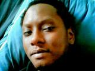

MOUSTAPHA TOURÉ
Diplomé de Biologie (niveau L3),auteur compositeur interprète autodidacte et apprenti développeur
MON EXPÉRIENCE
- De 2003 à 2008: intérim à Class'crout,restauration d'entreprise (livraison et assistant manager) pour financer mes études.
- De 2005 à 2006: Assistant technicien de laboratoire à l'institut Pasteur de Dakar
- De 2007 à aujourd'hui: Réceptionniste dans l'hôtellerie de luxe (cinq établissements)
MES COMPÉTENCES
- Bilingue Français-Anglais
- Capacité en sciences expérimentales dans la biologie (Travaux pratiques en DEUG et LICENCE de Biologie:Génomique, chimie, biochimie métabolique etc...)
- Gestion hôtelliére avec des logiciels comme médialog
- En cours HTML et CSS
- Guitariste autodidacte, artiste compositeur-auteur-interprète
MA FORMATION
- De 2000 à 2003:DEUG Biologie mention Sciences de la Vie et de la Terre
- De 2003 à 2005:Licence de Biologie Cellulaire et Physiologique
- De 2005 à 2006:Licence de Physique des matériaux et technicien de laboratoire à l'institut Pasteur de Dakar
- De 2011 à 2012:Licence d'Éco-Gestion au CNAM en cours du soir
- Du 4 Juillet 2017 à aujourd'hui:Formation au métier de développeur web sur OPEN CLASSROOM (HTML et CSS)
{kind=link}